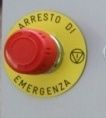
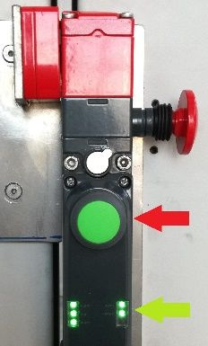

The machine is equipped with mechanical, electromechanical and software safety systems that intervene automatically in the event of a fault, reducing the risk.
For information on the safety devices, refer to Section A of the use and maintenance manual.
Emergency stop button
Located on the control panel immediately below the monitor, it must be used only in an emergency. Dedicated buttons described above are provided for stopping programs and movements.
Pressing the emergency stop button causes:
Immediate stopping of the axes
Stopping of the spindle
Disabling of various auxiliary controls, such as cooling water.
A fraction of a second after the button is pressed, power is removed from all the machine's electrical devices, placing it in a safe state.

When the emergency condition has ended, work can be resumed. To do so, release the emergency stop button by turning it slightly anticlockwise and re-enable the controls using the “Reset” button on the electrical cabinet door.
Front safety barriers
When the doors are open, as determined by the electrical status of the lock (yellow arrow), the machine operates in a restricted mode to comply with applicable safety regulations.

The following operations are disabled:
Spindle on/off
Coolant on/off
Start axis homing
Start any automatic movement
The following functions are enabled:
Tilting worktable up and down
Manual axis movement at limited speed
Programming the process parameters
Whenever safety mode is activated with the barriers open by pressing the button indicated by the red arrow, any programs currently running are stopped automatically and placed in “HOLD” mode until the safety condition is cleared. The “Cycle Start” button must then be pressed.
Interruption due to lack of water
The machine is equipped with a pressure switch that measures the incoming water pressure. It must be calibrated according to the amount of water required for the intended processes.
During automatic cycles, the pressure switch is activated to verify the actual presence of water pressure. If no pressure is detected, it automatically stops the current cycle and activates an error message. The operator must reset the error after ensuring that the pressure conditions allow the current process to continue. Processing can then be restarted directly from the point at which it stopped.
If a polishing process is being performed (not loaded from ISO), a lack-of-water error causes the machine head to rise rapidly and automatically, moving the polishing plate to the material clearance position.
Collision limit switch
The vertical Z movement is equipped with an anti-collision system that detects a possible vertical collision between the tool and the workpiece. Activation of this alarm stops all automatic and manual machine movements except upward vertical movement
To clear the collision, stop any automatic programs in progress and carefully move the Z axis upwards using the knob on the control panel.
Ampere threshold
The current drawn by the spindle, measured in amperes, is an important indicator of the condition of the machine and tool. This parameter enables real-time monitoring of the load placed on the spindle by the tool's operation.
It is important to enter an appropriate “Ampere threshold” value in the tool table. Processing is stopped if this value is exceeded.
If processing is interrupted due to the “Ampere threshold”, check the operating conditions to identify the cause. If conditions permit, simply press the “Start” button twice: the first press resets the alarm and the second restarts processing.
Axis travel check
The numerical control checks the target movement position point by point to ensure that the requested value is within the available axis travel.
A programming error that would command movement beyond the permitted limits is indicated by the message: “Axis …: position outside limit”.